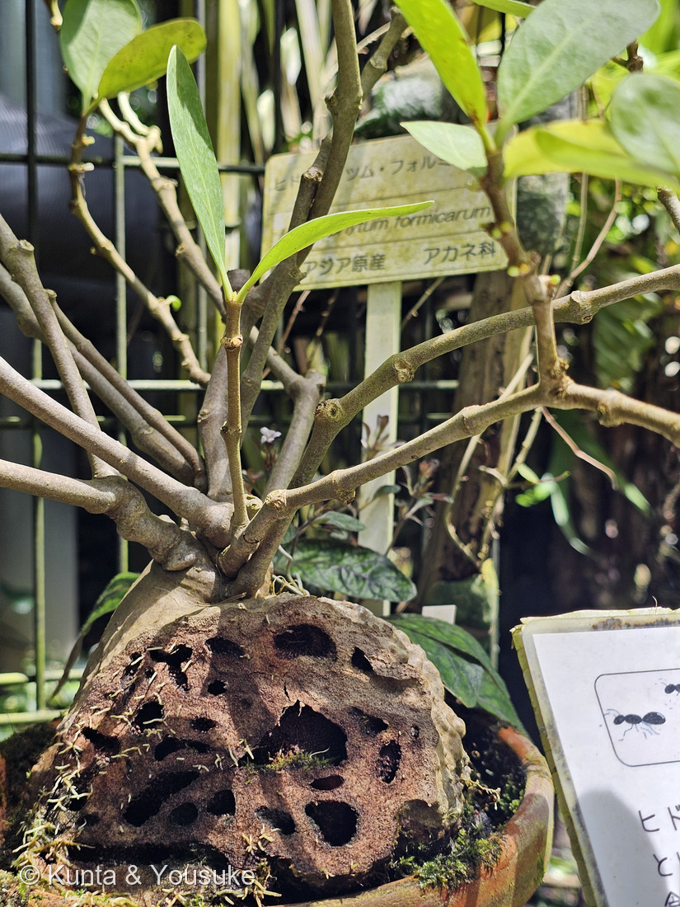
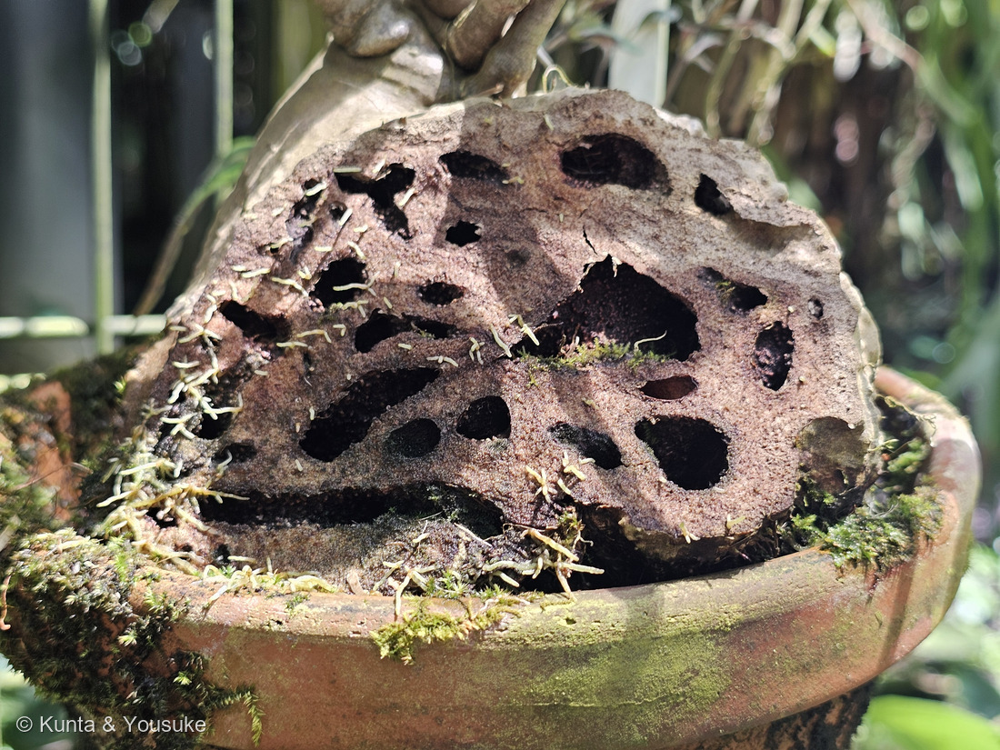
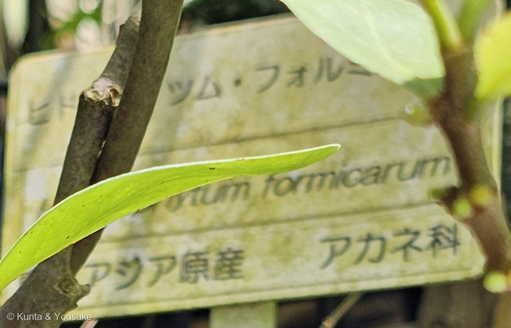
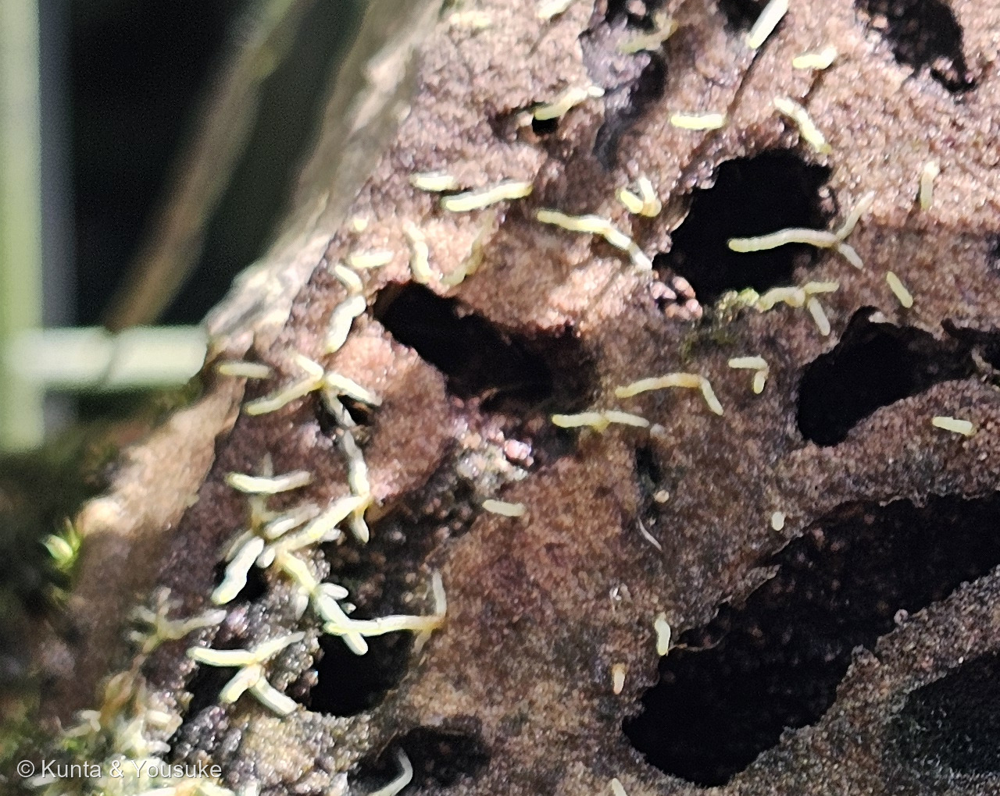

地図を読み込んでいるよ…
🔍 写真も地図も、押しているあいだ拡大して見られるよ（スマホは指を置いてすこし待ってね）。
🌍 の地図＝この子がもともと自生している場所を緑に。東南アジア（園の名札）。園の解説板は「ボルネオなど東南アジアの熱帯雨林の樹木や岩に着生（自生）」とする。⭐属としては東南アジア・太平洋地域・オーストラリア北部のクイーンズランドまで（英語版Wikipedia）。くわしくは下の地図の説明を見てね。
⭐東南アジアの熱帯雨林の子だよ＝園の名札が「東南アジア原産」、解説板が「ボルネオなど東南アジアの熱帯雨林の樹木や岩に着生（自生）」とする。⚠どちらも国名までは書いていないので、東南アジアの9か国をぼくの見当で塗った＝そのつもりで見てね。⚠シンガポールも産地に入りそうだけれど、この世界地図のデータに無いので塗れなかったよ（⭐275 アエオニウムのカーボベルデと同じことが起きた）。⭐⭐属としてはもっと広い＝英語版Wikipediaは Hydnophytum 属を「東南アジア、太平洋地域、そしてオーストラリア北部のクイーンズランドまで」とする＝⚠ここではこの種の名札にそろえて、東南アジアだけにしてあるよ。⭐⭐⭐そして、この緑でいちばん大事なのは「熱帯雨林」ということ＝この子は木の枝や幹の上で暮らす着生植物で、根もとに土がない――⭐だから幹の中にアリを住まわせて、その排泄物から養分をもらっているんだ（本文を見てね）。⭐同じアカネ科では026 ヘクソカズラが日本の在来種、044 ペンタスが熱帯アフリカ、246 イクソラが熱帯アジア＝⭐⭐この子はいちばん「森の上のほう」で暮らしている子だね。
⚠ 地図は国（日本と中国だけ県・省）までしか塗れないから、ほんとうの分布より広く見えていることがあるよ。地図はだいたいの場所。正確なところは、上の文を見てね。
ヒドノフィツム・フォルミカルム（アリノスダマ）
Hydnophytum formicarum Jack
属名の意味 · ⭐ギリシャ語 hydnon（塊茎）＋ phyton（植物）＝「こぶの植物」 種小名 · ⭐⭐formicarum＝ラテン語 formica（アリ）から「アリたちの」 別名 アリノスダマ（蟻の巣玉）
アカネ科 · Rubiaceae（ヒドノフィツム属 Hydnophytum・リンドウ目 Gentianales）── ⭐図鑑で4人目のアカネ科（026 ヘクソカズラ・044 ペンタス・246 イクソラ）／⚠科は104のまま
燻太さんの言葉「アリ植物のヒドノフィツムかな。名札はついていなかったけど、見落としたんだと思う。」「自分の幹をアリのマンションにするなんて、思いきった生存戦略だね。」「切られた箇所から黄緑色の仮根のようなものが出ているよ。」── ⭐⭐⭐名札、写真①にちゃんと写っていたよ。そして「思いきった」の見返りも分かった
⭐⭐⭐ 名前と学名の由来 ── 「こぶの植物」と「アリたちの」
- ⭐⭐属名 Hydnophytum は、古代ギリシャ語の hydnon（塊茎）＋ phyton（植物）＝「こぶの植物」（英語版Wikipedia「derived from the Ancient Greek hydnon 'tuber', and phyton 'plant'」）。⭐ふくらんだ多肉質の茎の姿からついた名前だよ。
- ⭐⭐⭐種小名 formicarum は、ラテン語の formica（アリ）から＝「アリたちの」。⭐アリのマンションになる木の名前が、そのまま「アリたちの」なんだ。
- ⭐⭐⭐⭐⭐そして、この子はただの一種じゃないよ＝Hydnophytum formicarum は、ヒドノフィツム属のタイプ種（英語版Wikipedia「The type species is Hydnophytum formicarum from the Philippines」）＝⭐「ヒドノフィツム属とは何か」を決めるときの、基準になった種なんだ。
- 和名（流通名）は「アリノスダマ（蟻の巣玉）」（園の解説板）＝⭐そのまんまの、いい名前だね。
⭐⭐ この植物のこと ── 土のないところで暮らす木
- ⭐⭐この子は着生植物（英語版Wikipedia「epiphytic myrmecophytes…The species grow in tree branches and on trunks」）＝木の枝や幹の上で育つ。⭐園の解説板も「ボルネオなど東南アジアの熱帯雨林の樹木や岩に着生（自生）」と書いているよ。
- アリの住所は「幹の基部の膨らんだところ」（園の解説板）＝⭐写真①②の、あの大きなこぶだね。
- 「葉の付け根（葉腋）に小さい白色の花を咲かせ、その後、楕円形の実がなる。実は徐々に橙色に変化する」（同）。⏳同じ展示の別の株には、もう橙色の実がついていたよ。
- ⭐属としては東南アジア・太平洋地域・オーストラリア北部のクイーンズランドまで広がっている（英語版Wikipedia）。
⭐⭐⭐ 同定について ── 名札は、ちゃんと写っていたよ
- ⭐燻太さんは「名札はついていなかったけど、見落としたんだと思う」と書いてくれた。⭐⭐でもね、写真①の左に、ちゃんと写っていたんだ。
- ⭐枝と葉のうしろに、うすい緑の字で見えていたので、その部分を切り出して90度回したら読めたよ（写真③）＝「ヒドノフィツム・フォルミカルム／Hydnophytum formicarum／東南アジア原産／アカネ科」。
- ⭐⭐⭐だから、燻太さんの見立て「アリ植物のヒドノフィツムかな」は当たっていて、しかも種小名まで確定できたよ。
- ⭐写真とも合っている＝幹の基部が大きくふくらんだ塊茎／塊茎の中がトンネルだらけ／枝が放射状に出て、細長い革質の葉／木や岩に着生する。
⭐⭐⭐⭐⭐ 燻太さんの「自分の幹をアリのマンションにするなんて、思いきった生存戦略だね」
- ⭐ほんとうに思いきっているんだ。⭐⭐でも、ちゃんともらうものがあるんだよ。
- ⭐⭐⭐塊茎の中のつくり＝「Hollow, smooth-walled tunnels form within the caudex with external entrance holes, providing an above-ground home for ant colonies」（英語版Wikipedia）＝塊茎の中になめらかな壁のトンネルができて、外に出入り口の穴が開き、アリのコロニーに地上の家を提供する。
- ⭐⭐⭐⭐⭐そして、ここがすごい＝「Ant colonies also provide nutrients to the plants by leaving wastes within the tunnels inside the caudex. Special glands lining the tunnels then absorb nutriment for the plant」（同）＝⭐⭐アリがトンネルの中に残した排泄物から、トンネルの内壁にある特別な腺が栄養を吸い取るんだ。
- ⭐⭐⭐つまり ── この木は、自分の体の中に「肥料をつくってくれる住人」を住まわせて、その壁から養分を吸っている。⭐部屋を貸して、家賃を壁で受け取っているようなものだね。
- ⭐⭐なぜそんなことが要るのか＝⭐この子は着生植物で、木の枝の上で暮らしていて、土がないから。⚠土から栄養をとれないなら、どこからとるか ── その答えが「アリ」だったんだ。
- ⭐園の解説板も、これを「win-winの関係」と書いている＝植物→アリ：外敵からの防御・住みか／アリ→植物：外敵からの防御・排泄物や食べ残し。
- ⭐⭐そして解説板のいちばんいい一文＝「食虫植物がアリなどの虫を食べるのとは反対に、アリ植物はアリを植物体内に住まわせています」＝⭐同じ「虫と関わる植物」でも、食べるのと住まわせるのと、まるで反対だね。
⭐⭐⭐⭐ 切られた断面 ── ふつうは見えないものが、見えている

④ 切り口から出た黄緑色の突起（写真②の切り出し） 🔍 押しているあいだ拡大して見られるよ。
- ⭐燻太さんの言うとおり、この株は展示のために切られている（写真②）。⚠ちょっとかわいそうだけれど――⭐⭐おかげで、ふつうは絶対に見えないものが見えているんだ。
- ⭐⭐⭐黒い穴が、大小いくつも、ばらばらの形で並んでいる。⭐丸いのも、細長いのも、つながって迷路みたいになっているのも。⭐⭐これがアリのトンネルだよ。
- ⭐園の解説板のイラストにも「トゲトゲのある所（塊茎）の中に迷路のようなアリの巣があるんだよ」と書いてある＝⭐ほんとうに迷路だったね。
- ⭐⭐そして大事なこと＝このトンネルは、アリが掘ったのではなく植物が自分で作る（英語版Wikipedia「Hollow, smooth-walled tunnels form within the caudex」）＝⭐アリが来る前から、部屋は用意されているんだ。
⭐⭐ 燻太さんの「切られた箇所から黄緑色の仮根のようなものが出ている」
- ⭐写真④を見て。——切り口のふちに、黄緑色で多肉質の、先の丸い短い棒が、枝分かれしながらびっしり出ている。
- ⚠⚠正直に言うと、これが何かは決めきれなかった。⭐ぼくの見立ては「切られた傷口から出た不定根が、光にあたって緑色を帯びたもの」――植物は傷つくと、そこから根や芽を出そうとするから。
- ⚠でも、コケの仮根や芽の可能性も消せない＝この塊茎には苔が生えているし、色も形もコケっぽいんだ。
- ⏳宿題にしたよ。⭐次に会ったとき、ルーペで見れば分かると思う＝根なら先端がとがった帽子（根冠）になっていて、コケなら葉のような構造が見えるはず。
⭐⭐ アカネ科は4人目 ── そして、まったく別の顔
- ⭐アカネ科は、この子で4人目＝026 ヘクソカズラ（つる草）・044 ペンタス（星形の花）・246 イクソラ（赤い花のかたまり）→ 278 ヒドノフィツム。⚠科は増えないので104のまま。
- ⭐⭐でも、この子だけまるでちがう顔をしている＝ほかの3人は「花を見る子」だけれど、この子は幹のこぶを見る子。⭐同じ科でも、暮らしかたでここまで姿が変わるんだね。
- ⭐園の解説板によると、アリ植物は「アカネ科、ノボタン科、ガガイモ科の他にラン科やパイナップル科など割と幅広い科に存在」する＝⭐うちの図鑑の051 ガガイモも、その「ガガイモ科」（いまはキョウチクトウ科ガガイモ亜科）の仲間だよ――⚠ガガイモ自身がアリ植物というわけではないけれどね。
- ⭐アリ植物は世界に500〜700種類あると言われている（同）。⏳同じ展示にあと4種いたよ（アリノスダマ H. puffii・ヒドノフィツム・モセレヤヌム・ミルメコディア・ツベロサ "ランフィ"・パキセントリア）。⭐次の日にゆっくり登録しようね。
出典：英語版Wikipedia「Hydnophytum」（属名の由来・タイプ種・着生・塊茎のトンネルと腺／en.wikipedia.org）／広島市植物公園の園の名札および解説板「ヒドノフィツム（アリノスダマ） Hydnophytum spp.」「アリと共に生きている！ アリ植物」（2026-08-08）／⚠解説板そのものの写真は、解説文のある看板なのでページに載せていないよ（247で決めた条件による）